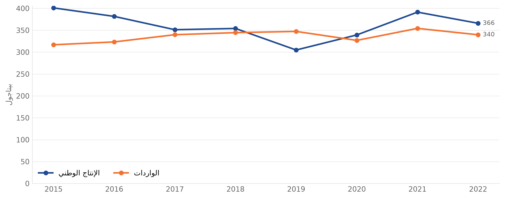
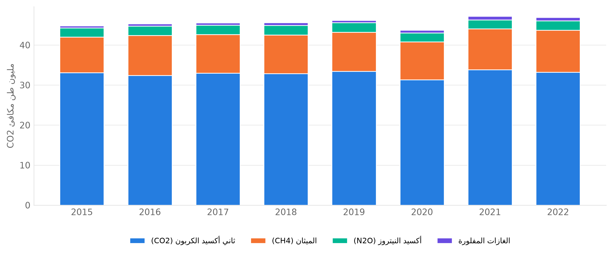

محتوى هذا العرض
- لماذا تحتاج إحصاءات الطاقة والانبعاثات إلى حسابات.
- نظام المحاسبة البيئية والاقتصادية وحساباته للطاقة والانبعاثات.
- المصادر التونسية الثلاثة التي تغذي الحسابات، وما يضيفه كل منها.
إطار نظام المحاسبة البيئية والاقتصادية والمصادر التونسية
| النظام | سؤال نموذجي | وحدة التصنيف |
|---|---|---|
| ميزان الطاقة | كم من الغاز الطبيعي أحرقت محطات الكهرباء؟ | القطاع التقني |
| الجرد | كم من الميثان أطلقت الماشية؟ | العملية المطلِقة |
| الحسابات القومية | كم من القيمة أضافتها الصناعات الغذائية؟ | الفرع |
لا يجيب أي منها وحده عن السؤال: كم من الطاقة يتطلبه كل دينار من القيمة المضافة، وفي أي فرع؟
تحتاج هذه الأسئلة إلى طاقة وانبعاثات منظمة كالحسابات القومية.
flowchart LR ENV1["البيئة"] -- "المدخلات الطبيعية" --> IND["الفروع المقيمة"] ROW1["بقية العالم"] -- "الواردات" --> IND IND -- "منتجات طاقوية" --> IND IND -- "منتجات طاقوية" --> HH["الأسر"] IND -- "الصادرات" --> ROW2["بقية العالم"] IND -- "البقايا" --> ENV2["البيئة"] HH -- "البقايا" --> ENV2
| الأسطر (التدفقات) | الموارد: من يوفرها | الاستخدامات: من يتلقاها |
|---|---|---|
| المدخلات الطبيعية | البيئة | الفروع المستخرجة |
| المنتجات الطاقوية | الفروع، الواردات | الفروع، الأسر، الصادرات، المخزون |
| بقايا الطاقة | الفروع، الأسر | البيئة، التراكم |
لكل سطر، تساوي الموارد الاستخدامات. والأعمدة هي وحدات الحسابات القومية.
| المصدر | المنتج | السنوات | الوحدة |
|---|---|---|---|
| ميزان الطاقة الوطني | المرصد الوطني للطاقة والمناجم | 2015–2022 | ألف طن مكافئ نفط |
| جداول الموارد والاستخدامات | المعهد الوطني للإحصاء | 2015–2023 | مليون دينار |
| جرد غازات الاحتباس الحراري (CRT) | الوكالة الوطنية للتحكم في الطاقة وشركاؤها | 2015–2022 | تيراجول، ألف طن |
تُستخدم المصادر الثلاثة كما وردت، ولا يعدلها خط المعالجة أبدًا.

في 2022: 366 بيتاجول من المنتجات الطاقوية من الإنتاج الوطني و340 بيتاجول من الواردات.
Data تضم كل القيم المبلغ عنها في صيغة طويلة.Data مع الورقة المنشورة Summary2 لكل فئة، باستثناء صغير (أكسيد النيتروز في 1.B.2.b.ii ابتداء من 2019).
الميزان
كل تدفق للطاقة، حسب المنتج والقطاع التقني.
جداول الموارد والاستخدامات
الفروع والمفاتيح والمقامات النقدية.
الجرد
الانبعاثات حسب العملية والغاز، والمستودعات للتحقق من الميزان.
حسابات الطاقة والانبعاثات في تونس